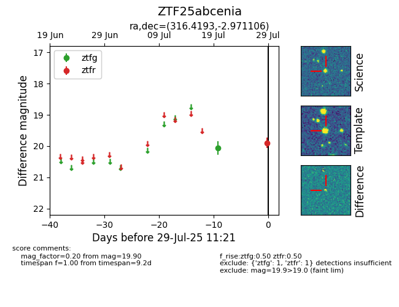

Target ZTF25abcenia at 2025-07-29 11:21, see:
FINK: fink-portal.org/ZTF25abcenia
Lasair: lasair-ztf.lsst.ac.uk/objects/ZTF25abcenia
ALeRCE: alerce.online/object/ZTF25abcenia
alt names
ZTF25abcenia (ztf,fink)
coordinates:
equatorial (ra, dec) = (316.4193,-2.97111)
galactic (l, b) = (46.8096,-30.99512)
photometry
last ztfg=20.06, ztfr=19.90
1 ztfg, 1 ztfr detections
